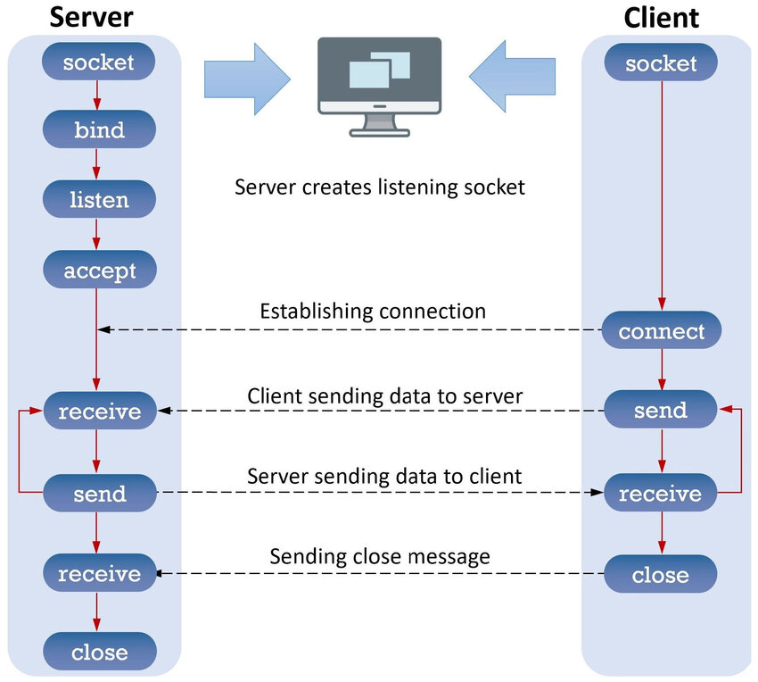

Le Socket
Cos'è una Socket?
Una socket è un'interfaccia software che permette la comunicazione tra due applicazioni attraverso una rete. Funziona come un punto terminale di trasmissione e ricezione dati.
- 🔗 Punto terminale: Una socket collega un'applicazione all'altra tramite una rete.
- 📡 Comunicazione bidirezionale: Dati possono fluire in entrambe le direzioni.
- 🆔 Identificazione: Ogni socket è associata a un indirizzo IP e una porta univoca.
Socket TCP vs Socket UDP
Esistono due principali tipi di socket, ciascuno con caratteristiche, vantaggi e svantaggi specifici. Ecco un confronto tra socket TCP e UDP:
| Caratteristica | TCP (Socket Stream) | UDP (Socket Datagram) |
|---|---|---|
| Connessione necessaria | ✅ Sì, necessita di una connessione stabile. | ❌ No, funziona senza connessione diretta. |
| Affidabilità | ✅ Alta, con garanzia di consegna dei dati. | ❌ Bassa, i pacchetti possono andare persi. |
| Ordine dei pacchetti | ✅ Garantito, i pacchetti arrivano nell'ordine corretto. | ❌ Non garantito, l'ordine potrebbe non essere rispettato. |
| Velocità | ❌ Più lento, a causa dei controlli di affidabilità. | ✅ Più veloce, ideale per trasmissioni rapide. |
| Applicazioni tipiche | Home banking, server di posta elettronica, web server e applicazioni di messaggistica. | Streaming video, giochi online, VoIP e DNS. |
Processo di Comunicazione
Socket TCP
La comunicazione tramite socket TCP avviene in questo modo:
- Creazione della socket lato server.
- Binding dell'indirizzo IP e della porta al server.
- Messa in ascolto del server e accettazione della connessione dal client.
- Scambio bidirezionale di dati tra server e client.
- Chiusura della connessione una volta terminata la comunicazione.
Socket UDP
La comunicazione tramite socket UDP avviene in questo modo:
- Creazione della socket senza connessione.
- Invio di dati dal client al server.
- Ricezione dei dati lato server (opzionalmente il server risponde al client).
- Chiusura della comunicazione senza la necessità di terminare formalmente la connessione.
Esempi Pratici
Ecco alcuni esempi di quando utilizzare ciascun tipo di socket:
Socket TCP
Ideale per applicazioni dove la sicurezza e l'ordine dei dati sono fondamentali:
- 💳 Home banking
- 📧 Server di posta elettronica
- 💬 Applicazioni di messaggistica istantanea
Socket UDP
Perfetto per scenari in cui la velocità è più importante dell'affidabilità:
- 📺 Streaming video
- 🎮 Giochi online
- 📞 Comunicazioni VoIP